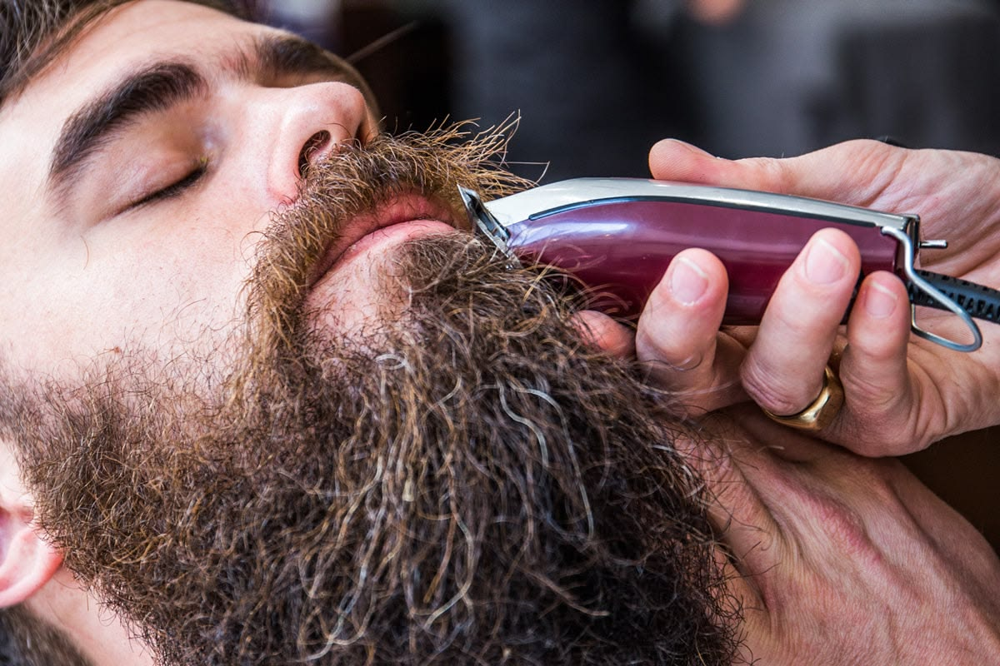
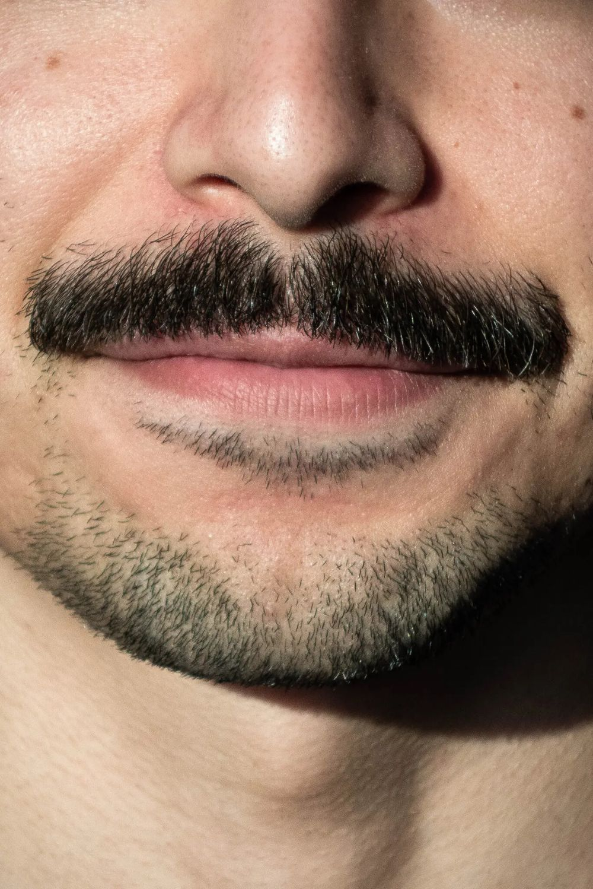

Szakáll vagy sima arc – mi a különbség valójában?
A kérdés egyszerűnek tűnik, de a válasz egyáltalán nem az. Sokan csak a pillanatnyi divat alapján döntenek – megnéznek néhány képet, és úgy érzik, "nekik is szakáll kellene". Vagy éppen ellenkezőleg: évek óta szakállt viselnek, mert mindig is az volt, anélkül hogy valaha végiggondolták volna, valóban ez áll-e a legjobban az arcukhoz.
A döntést érdemes három szempont mentén végiggondolni: az arcforma, a karbantartásra fordítható idő és a kívánt összhatás. Mindhárom más irányba mutathat – és egy tapasztalt barber segít összerakni a képet.

Szakáll és sima arc – előnyök és hátrányok
Szakáll
Karakter, erősebb arcvonások, elfedett arányok.
- Erősebb, karakteresebb megjelenés
- Kiemeli az állkapocsvonalat
- Elfedheti az aránytalanságokat
- Modern barber stílusokhoz jól illik
- Rendszeres szakálligazítást igényel
- Szakállolaj, balzsam szükséges az ápoláshoz
- Nem mindenkinél nő egyenletesen
Sima arc
Letisztult, rendezett, klasszikus megjelenés.
- Tiszta, gondozott hatás
- Üzleti, formális alkalmakhoz ideális
- Kevesebb napi karbantartás
- Fiatalosabb, frissebb összhatás
- Gyorsan visszanő
- Érzékeny bőrnél irritáció kockázata
- Rendszeres borotválkozás szükséges

Melyik áll jól az arcformádhoz?
Az arcforma az egyik legfontosabb szempont – és az, amit a legtöbben figyelmen kívül hagynak. Az alábbiakban arcformánként adjuk meg az iránymutatást.
Kerek arc
A szakáll megnyújtja az arcot és erősebbé teszi az állkapocsvonalat – ez a legelőnyösebb kombináció. Középhosszú, kontúrozott szakáll a legkedvezőbb. Sima arc esetén a kerek forma hangsúlyozódik.
Szögletes arc
Mindkettő működik. A szakáll még karakteresebbé teszi az erős vonásokat – ez egyes stílusokhoz előny, másokhoz nem. A sima arc tiszta, erős megjelenést ad. A döntés az összhatáson múlik.
Ovális arc
A leguniverzálisabb arcforma – szinte bármelyik választás jól mutat. Inkább az életstílus és a kívánt összhatás döntsön, nem az arcforma. Szakállal és sima arccal egyaránt előnyös.
Hosszúkás arc
A hosszú szakáll tovább nyújtja az arc látszólagos magasságát – ez nem előnyös. Rövid borosta vagy oldalas szakáll szélességet adhat. Sima arc is jó választás, különösen ha a hajvágás kiegyensúlyozza az arányokat.
Karbantartás – mennyit kell foglalkozni vele?
A döntés nem csak esztétikai – az is számít, mennyi időt és energiát szeretnél fordítani az arcszőrzetre a hétköznapokban.
- Szakáll esetén: rendszeres szakálligazítás 2–4 hetente, napi szakállolaj vagy balzsam, esetenként fésülés – ez összességében több törődést igényel, de az eredmény tartósabb megjelenést ad
- Sima arc esetén: rendszeres borotválkozás 1–3 naponta, borotvakrém és aftershave – ez gyors napi rutin, de sűrűbben kell elvégezni
- Borosta (stubble): a legtakarékosabb megoldás – ritkán kell igazítani, mégis rendezettnek mutat; sok férfi számára ez a legpraktikusabb kompromisszum
A Bosphorus barber shopban szakálligazítás és klasszikus borotválkozás egyaránt elérhető – és a borbély elmondja, melyik karbantartási rutin illik a legjobban az arcszőrzetedhez és az életstílusodhoz.
Kérd ki egy profi barber véleményét
Szakáll vagy sima arc – a Bosphorus barber shopban segítenek eldönteni, melyik áll jól neked. Foglalj időpontot, és a borbély az arcformád, a hajtípusod és az életstílusod alapján ad személyre szabott javaslatot.